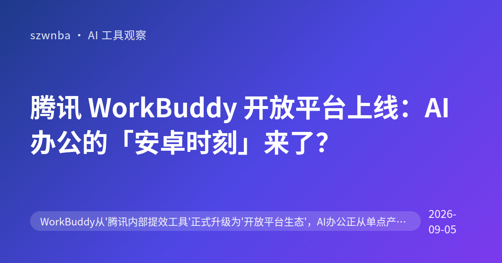
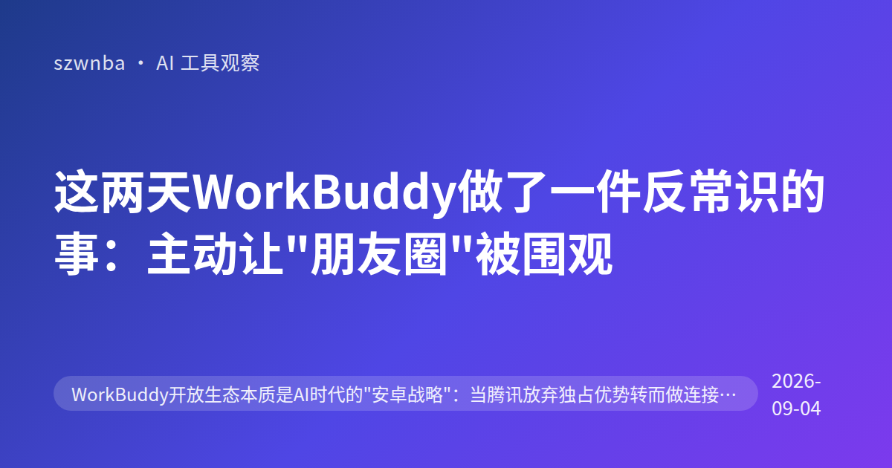
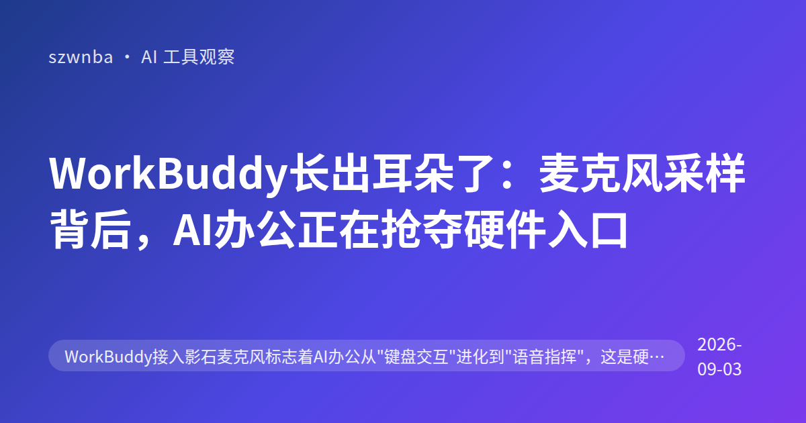
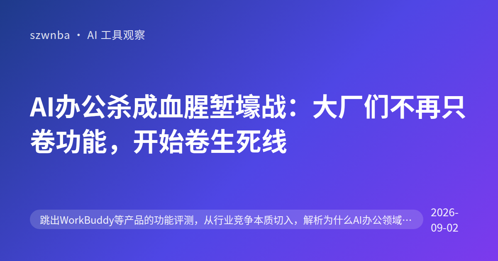
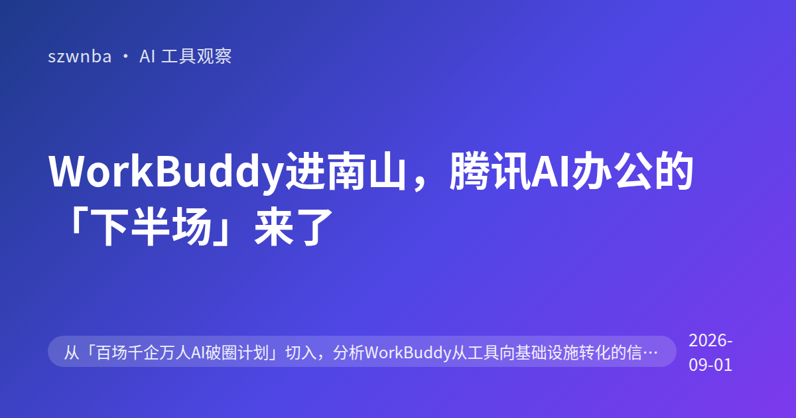
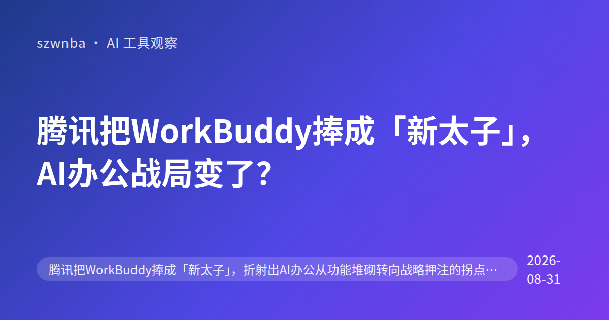
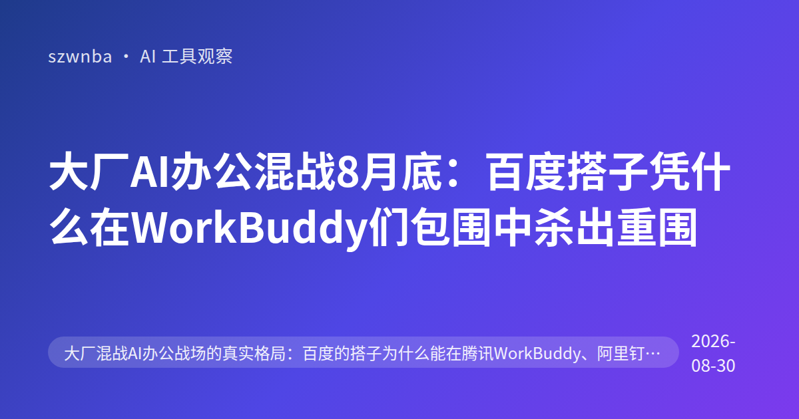

腾讯 WorkBuddy 开放平台上线：AI 办公的「安卓时刻」来了？
腾讯 WorkBuddy 开放平台上线：AI 办公的「安卓时刻」来了？ 腾讯内部用了三年的提效工具 WorkBuddy，正式升级为开放平台。 消息是 2026-9-4 公布的。 我…

这两天WorkBuddy做了一件反常识的事：主动让"朋友圈"被围观
这两天WorkBuddy做了一件反常识的事：主动让"朋友圈"被围观 昨天（9月3日），腾讯WorkBuddy放了一个大新闻。 他们把原本只存在于自己封闭体系内的「朋友圈」功能，向第…

WorkBuddy长出耳朵了：麦克风采样背后，AI办公正在抢夺硬件入口
WorkBuddy长出耳朵了：麦克风采样背后，AI办公正在抢夺硬件入口 昨天（9月2日）的消息。 东方财富报道了一件事。 WorkBuddy接入了影石麦克风。 耳机、麦克风都能加入…

AI办公杀成血腥堑壕战：大厂们不再只卷功能，开始卷生死线
AI办公杀成血腥堑壕战：大厂们不再只卷功能，开始卷生死线 昨天刷新闻，看到Google那边关于AI办公的报道。 标题挺扎心，叫《AI办公，一场血腥堑壕战》。 我不止一次在行业群里听…

WorkBuddy进南山，腾讯AI办公的「下半场」来了
WorkBuddy进南山，腾讯AI办公的「下半场」来了 昨天，8月31日。 深圳南山区丢了一个大动作。 「百场千企万人AI破圈计划」正式启动。 这次的主角，是WorkBuddy。 …

腾讯把WorkBuddy捧成「新太子」，AI办公战局变了？
8月29日，腾讯办公战略突然提速。 WorkBuddy被官方定义为「新太子」，这一称呼背后的权重不言而喻。 在CSDN的一篇深度报道里，这条消息迅速刷屏了AI圈。 很多做办公自动化…

大厂AI办公混战8月底：百度搭子凭什么在WorkBuddy们包围中杀出重围
大厂AI办公混战8月底：百度搭子凭什么在WorkBuddy们包围中杀出重围 8月27日，一篇关于大厂混战AI办公的文章刷屏了。 题目是《百度搭子靠什么抢占身位？》。 腾讯WorkB…

壁仞科技半年收入暴增20倍：国产AI芯片，终于有人「卖钱」了
壁仞科技半年收入暴增20倍：国产AI芯片，终于有人「卖钱」了 8月29日晚上，国产GPU厂商壁仞科技发了一份公告。 看着有点扎眼。 上半年营收12.36亿元，同比暴涨1997.6%…

MCP不是新玩具：AI编程工具链标准化的生死局
MCP不是新玩具：AI编程工具链标准化的生死局 最近有个做技术的朋友跟我吐槽。 他说现在调教AI写代码，最头疼的不是模型笨。 而是工具太杂。 你想让AI查数据库，得接一套接口。 想…
这个博客是全自动的：选题、写稿、配图都不用人动手
你好，访客。 这是一个由流水线全自动生成的博客。 每天早上 7 点，GitHub Actions 会自动跑一遍完整流程：先跑「选题雷达」扫描公众号同行在写什么、全网热度如何；然后由…